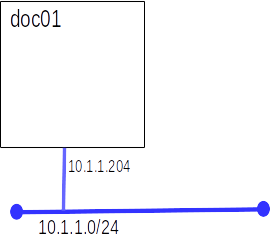

Today we will move past running single containers on a single host, we will run groups of containers to form an application.
We will use the doc01 we created in the Introduction to Docker lab. If you did not save it, recreate it by completing Part A of the Introduction to Docker lab.

:set tabstop=4 :set expandtabor, adding these lines to ~/.vimrc
set tabstop=4 set expandtab
None of the changes you made to doc01 for this lab need to persist for future labs.